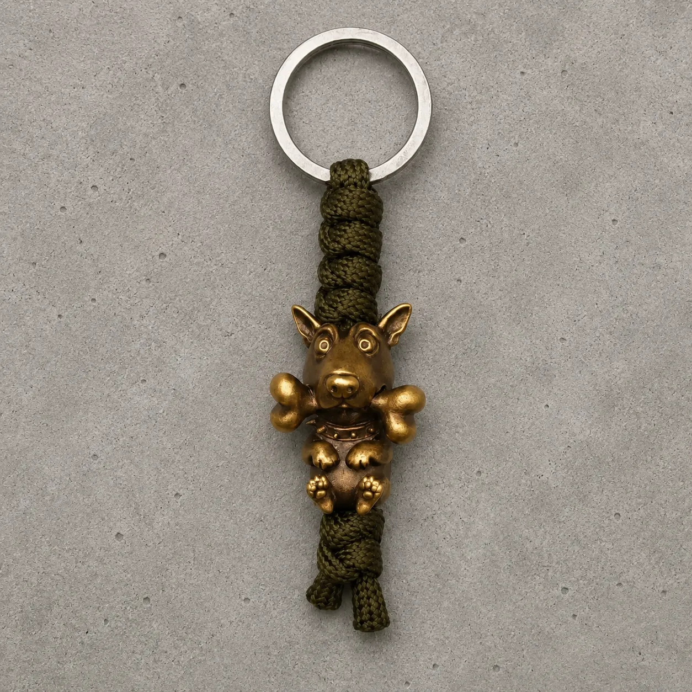
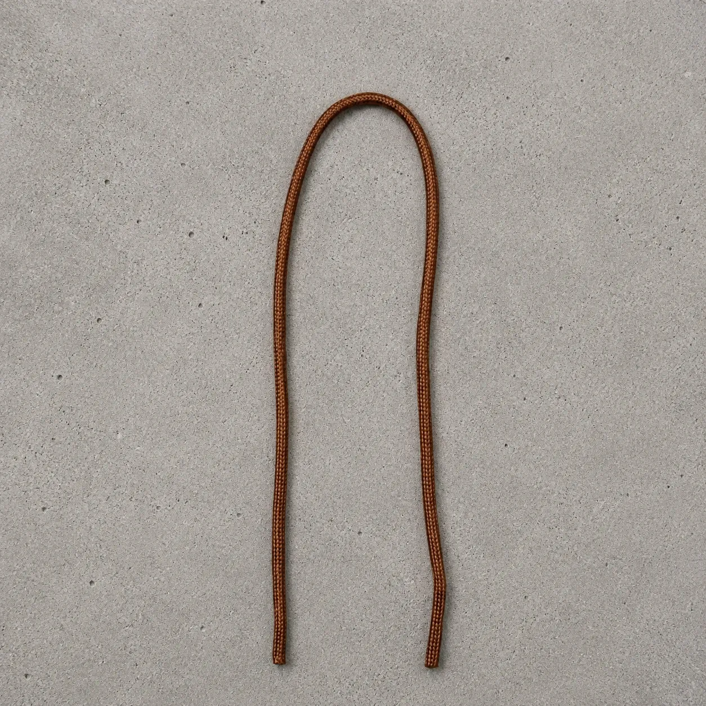
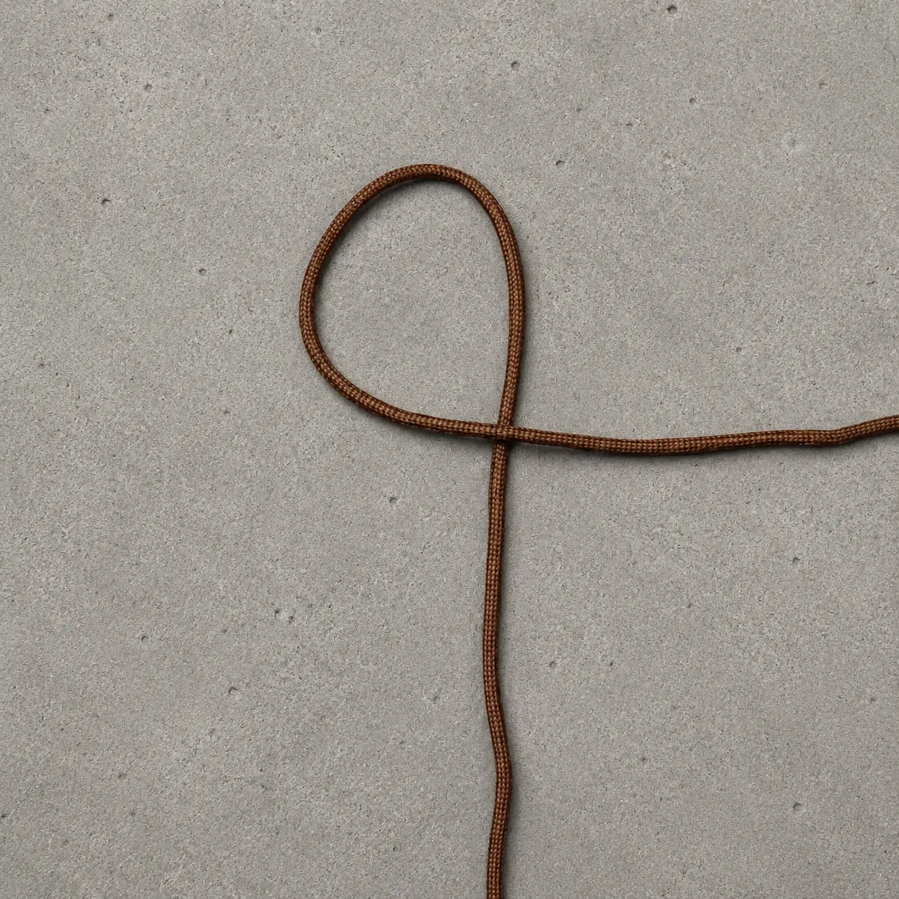
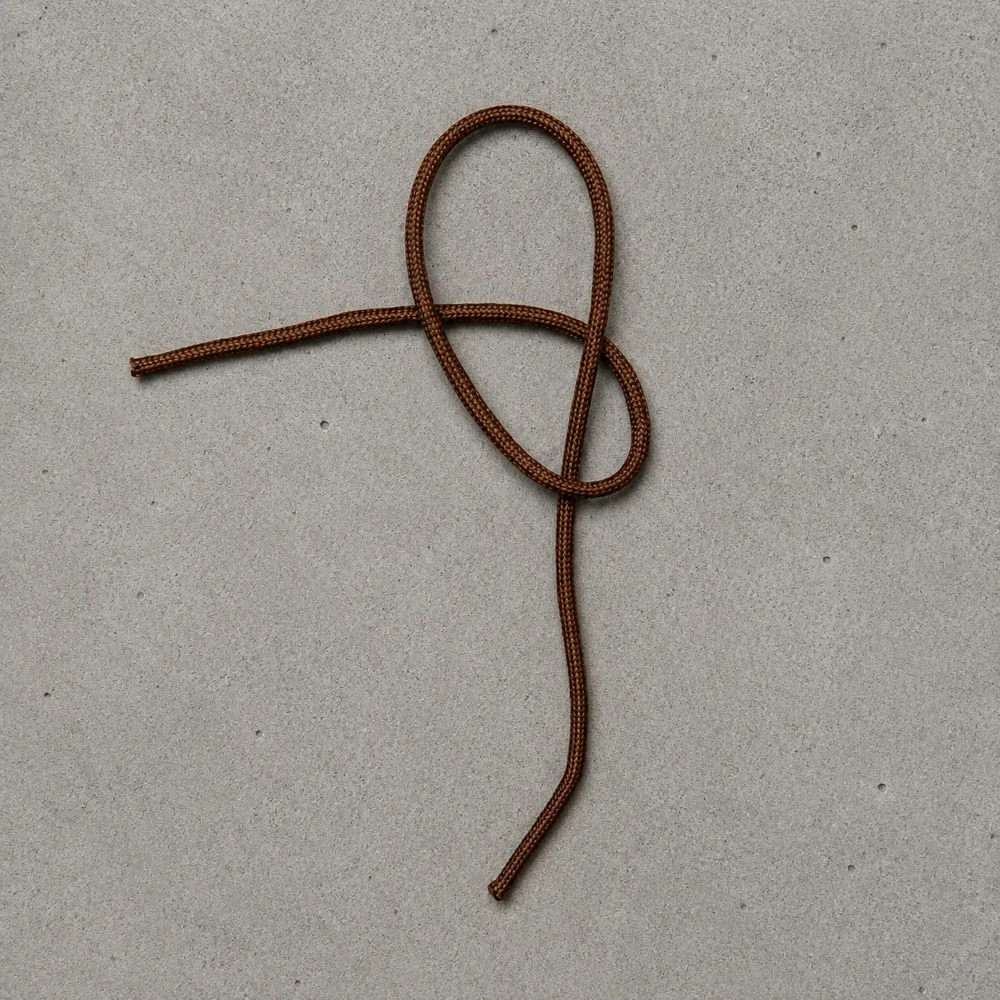
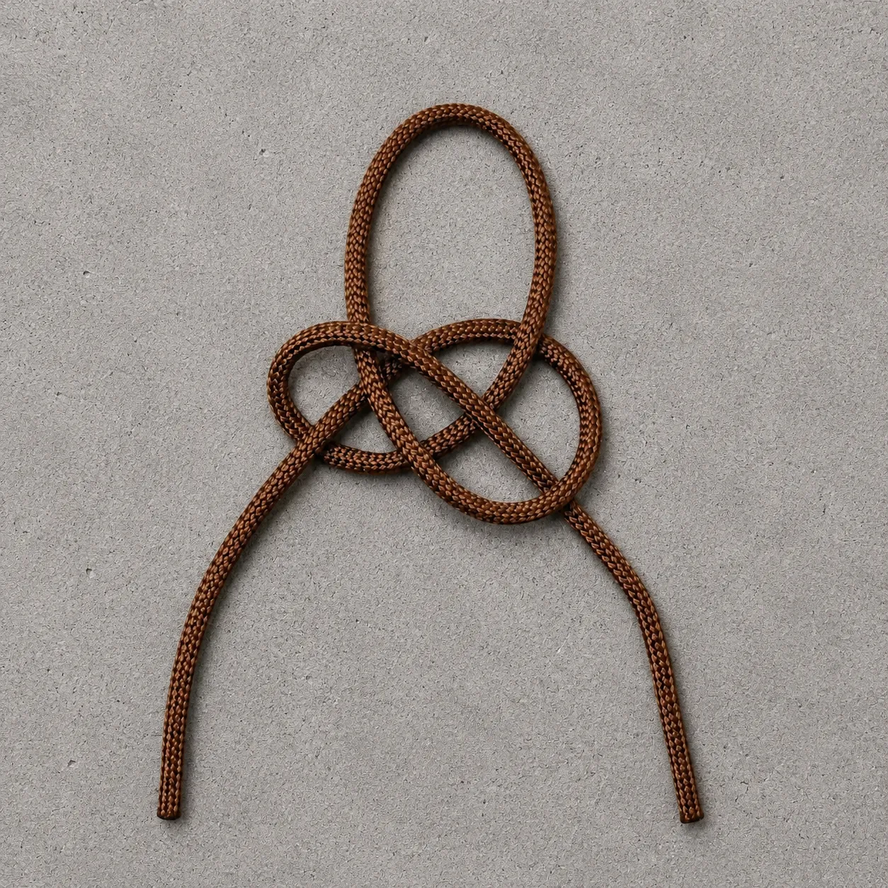
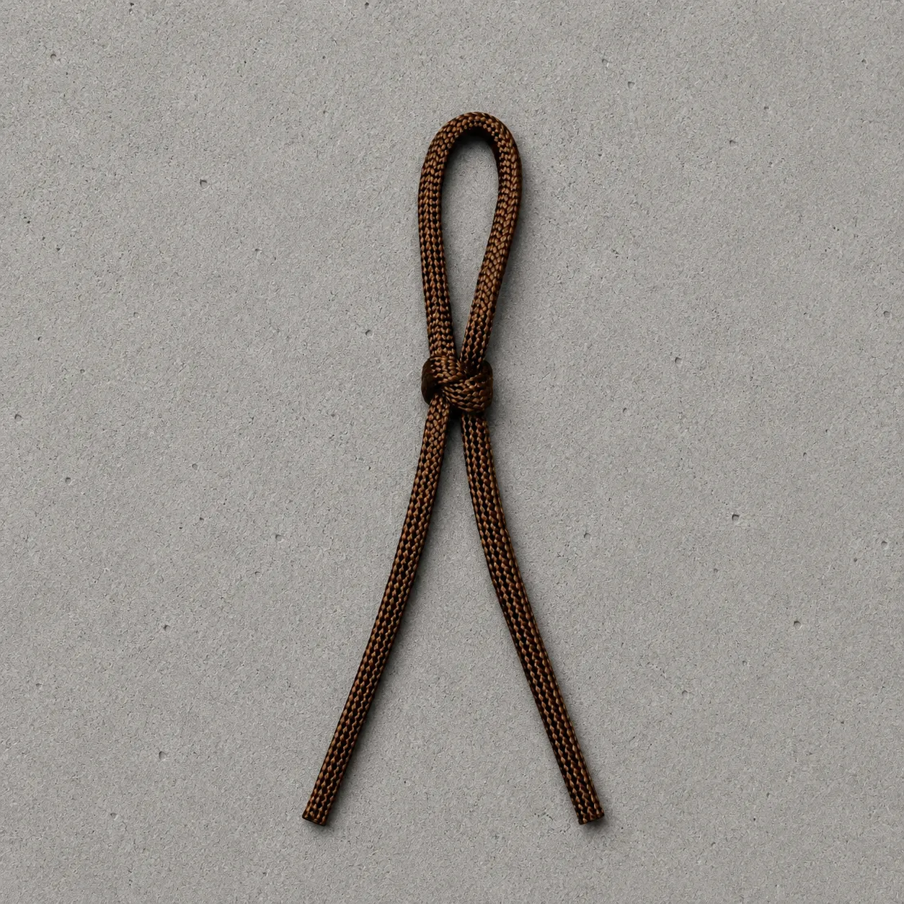
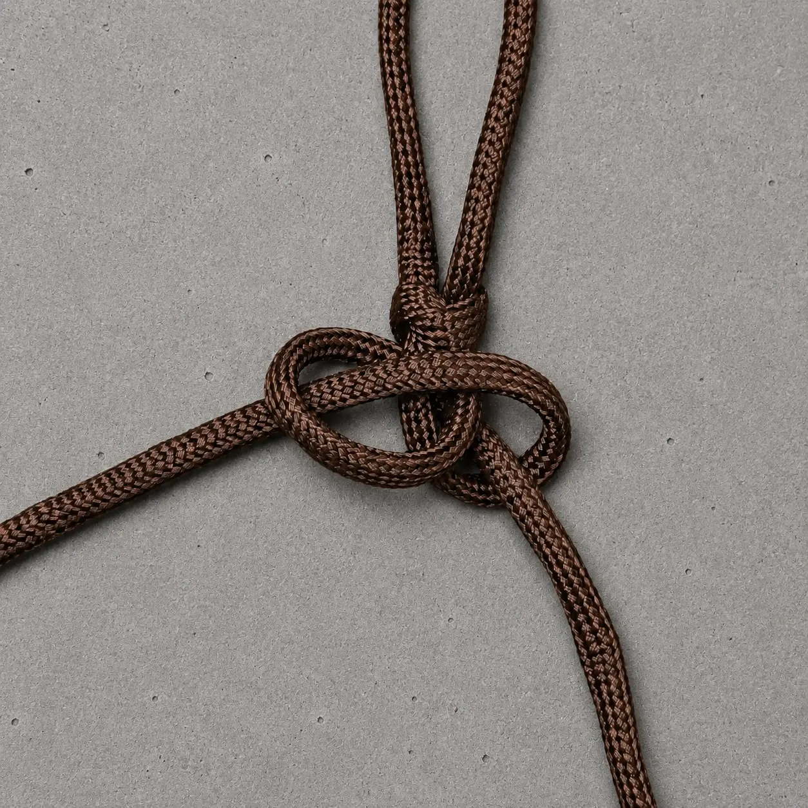
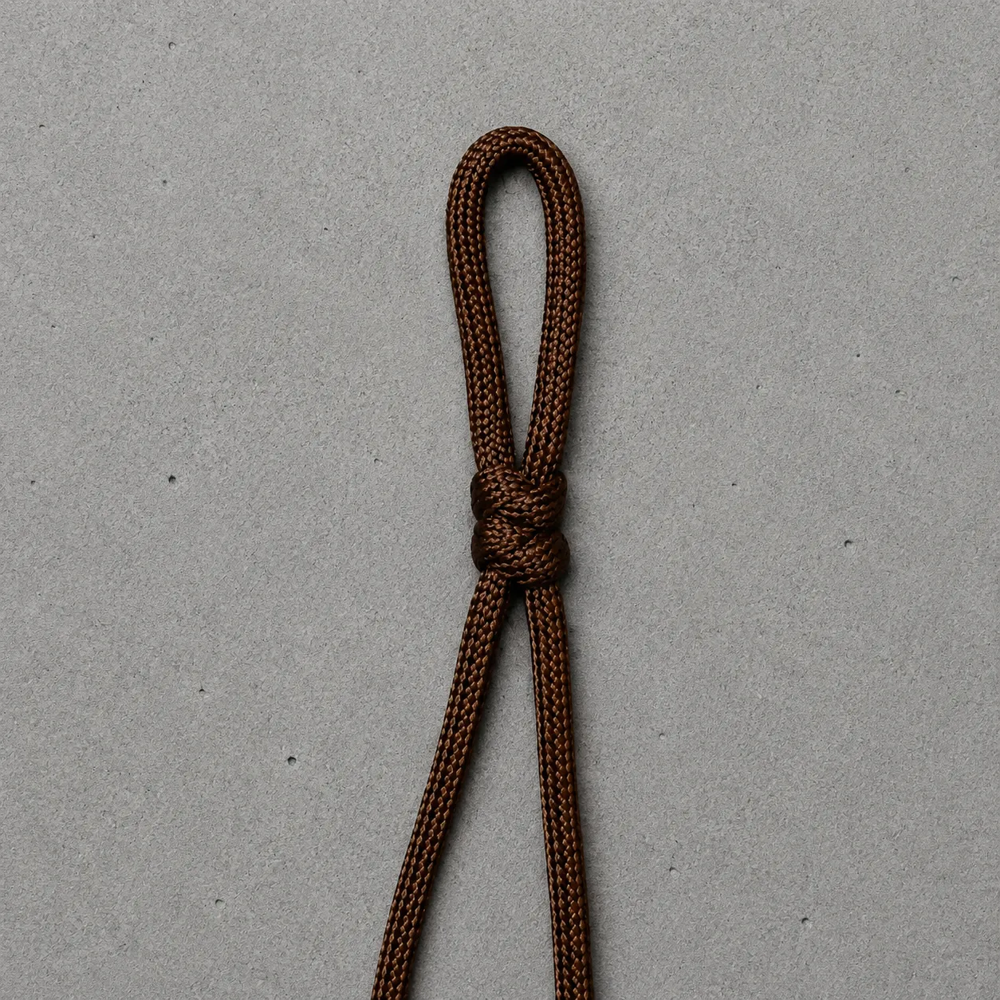
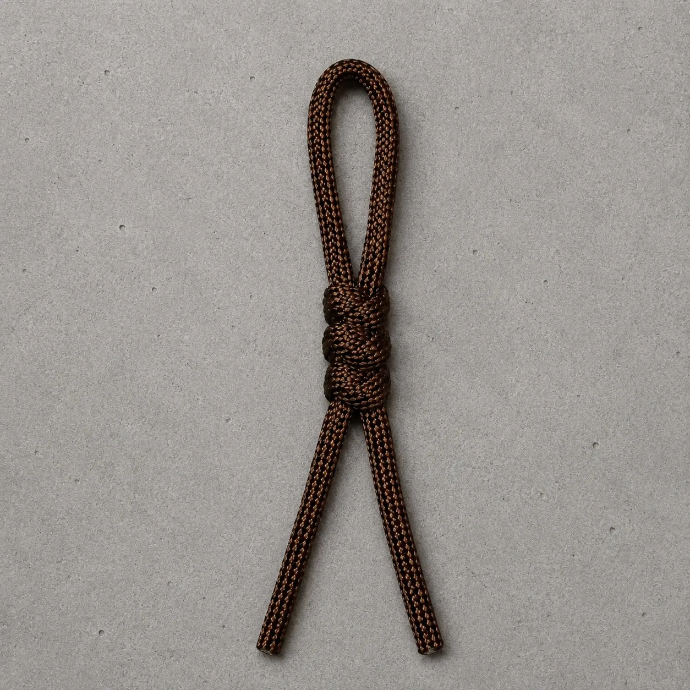

«Змейка» — один из самых удобных базовых вариантов плетения из паракорда: рисунок получается аккуратным, ритмичным и понятным уже после первых повторов.
Это плетение хорошо работает не только на темляке. Тот же принцип можно использовать для темляка, брелка, небольшого подвеса или другого компактного изделия из паракорда, когда нужен ровный рисунок без слишком сложной схемы.
В этом материале показан базовый ход плетения на примере темляка из паракорда: от стартовой петли до уже сформированного участка без финального узла. Ниже, в конце статьи, добавлено и короткое видео процесса, чтобы было проще уловить ритм движений. Завершение темляка и сам узел лучше разбирать отдельно, чтобы не смешивать две темы в одной инструкции.
Это не полный каталог. Если нужна другая форма, размер или настроение — откройте все бусины для темляка или посмотрите профессиональную категорию темлячные бусины.
Содержание
- Видео процесса
- Что понадобится для плетения
- Пошаговое плетение «змейка»
- Как сделать плетение ровным
- Где ещё использовать такую схему
- Что делать дальше
- Частые вопросы
Видео процесса
Короткое видео удобно для понимания ритма плетения: как формируется стартовая петля, как проходит второй конец и как начинает проявляться рисунок «змейка». Для повторения руками всё равно удобнее идти по фото и шагам выше — поэтому видео и пошаговые кадры здесь работают вместе.
Что понадобится для плетения
- Паракорд 275, 2 мм. В этом примере использован отрезок длиной 60 см — с учётом будущего узла в конце.
- Ножницы. Нужны для ровного реза перед финальной обработкой концов.
- Зажигалка. Пригодится после завершения темляка, когда нужно будет аккуратно оплавить концы.
- Пинцет или шило. Не обязательны, но удобны, если плетение затягивается плотно.
- Темлячная бусина. По желанию. Её можно добавить уже после того, как сам рисунок плетения получается уверенно.
Плетение «змейка» пошагово
Сложите шнур пополам и задайте стартовую петлю

Сложите паракорд пополам, выровняйте две основные жилы и сразу задайте длину верхней петли. Это исходное положение для плетения и место, за которое темляк, брелок или подвес потом будет крепиться.
Сформируйте первую боковую петлю

Одним свободным концом сделайте боковую петлю. Здесь важно не торопиться: если старт получается ровным, дальше рисунок тоже собирается заметно легче.
Заведите второй конец в петлю

Свободный конец с противоположной стороны проведите поперёк центра и заведите в сформированную петлю. На этом шаге уже собирается первый узловой рисунок.
Соберите первое переплетение

Перед затяжкой проверьте форму: верхняя петля должна оставаться ровной, а боковые элементы — примерно одинаковыми. Это задаёт аккуратный старт всему плетению.
Подтяните первый элемент и начните следующий

Плавно подтяните стартовый узел, а затем переходите к следующему элементу плетения. После первого узла уже хорошо видна логика дальнейшего рисунка.
Начните плетение второго узла по той же схеме

Начните второй узел по той же логике. В этот момент уже важно следить не только за самим переплетением, но и за общей осью плетения, чтобы рисунок не начал уходить в сторону.
Подтяните плетение и повторяйте рисунок

Аккуратно затяните второй элемент и дальше повторяйте те же действия. После нескольких повторов уже хорошо виден характерный рисунок «змейка».
Получите готовый участок плетения

Так выглядит уже сформированный участок плетения без финального узла. Дальше можно доплести нужную длину и закончить изделие отдельным узлом.
Как сделать плетение ровным
«Змейка» — это базовая техника плетения, которая хорошо работает как на темляке для ножа, так и на брелоке или подвесе. Рисунок получается аккуратным, если следить за размером петель и не затягивать первый элемент слишком сильно.
- Следите за размером петель. Если одна сторона получается свободнее другой, рисунок начнёт уходить в сторону.
- Периодически укрепляйте центральную жилу. Это помогает сохранить аккуратную ось плетения.
- Оставляйте запас по длине. Финальный узел и обработка концов тоже потребуют немного шнура.
- Не затягивайте первый элемент рывком. Гораздо лучше сначала выровнять рисунок и только потом спокойно подтянуть.
Большинство новичков начинают именно со «змейки». После неё обычно переходят к более плотному плетению «кобра» или начинают добавлять бусины в готовые темляки.
Где ещё использовать такую схему
«Змейка» хорошо работает не только в ножевом темляке. Тот же рисунок удобно использовать для брелка, подвеса на сумку, небольшого шнурка с бусиной или компактного декоративного подвеса, если нужен спокойный, не слишком массивный результат.
Поэтому эту страницу удобно воспринимать как базовую технику. Сам рисунок здесь один и тот же, а уже длина, финишный узел и наличие бусины зависят от того, что именно Вы хотите получить в итоге.
Что делать дальше
Если этот материал уже разобран, дальше лучше перейти к ближайшим связанным темам — без длинного списка и лишних повторов.
Частые вопросы
Подойдёт ли для этого плетения другой шнур?
Да, но внешний вид и плотность будут отличаться. В этой инструкции использован паракорд толщиной 2 мм, поэтому именно под него подобраны длина отрезка и масштаб плетения.
Подходит ли «змейка» для темляка на нож?
Да. Это один из самых удобных вариантов для темляка на нож: плетение получается аккуратным, не слишком объёмным и хорошо читается визуально.
Можно ли использовать такую схему для брелка или подвеса?
Да. Тот же рисунок вполне подходит и для небольшого брелка, подвеса на сумку или компактного изделия с бусиной. Меняется в основном длина и способ завершения.
Можно ли сразу плести с бусиной?
Можно, если Вы заранее понимаете, как будете завершать изделие. Но для первого прохода обычно удобнее сначала освоить сам рисунок «змейка», а уже потом добавлять бусину и финальный узел.
Сколько длины получится из 60 см шнура?
Точная длина зависит от плотности затяжки и размера стартовой петли. Этот отрезок взят как рабочий пример под небольшое плетение с запасом под завершающий узел.
Где смотреть завершение темляка?
Финальный узел лучше вынести в отдельную статью. Так пошаговая инструкция по самому плетению остаётся компактной и не перегружается второй темой.
Какие бусины подойдут для этого темляка
Плетение «змейка» отлично сочетается с авторской бусиной.